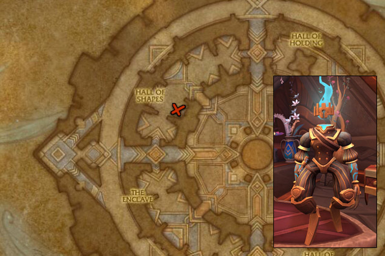
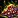
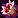
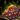
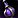
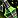
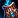
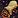
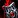
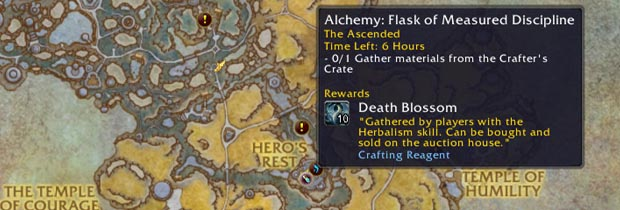

This Shadowlands Alchemy leveling guide will show you the fastest way how to level your Shadowlands Alchemy skill up from 1 to 175 as inexpensively as possible.
This Shadowlands Alchemy leveling guide will show you the fastest way how to level your Shadowlands Alchemy skill up from 1 to 175 as inexpensively as possible.
Shadowlands Alchemy Trainer Location
You can learn Shadowlands Alchemy from Elixirist Au'pyr in Oribos at the Hall of Shapes. (Coordinates: 39.6, 40.2)
Oribos is the new Shadowlands city hub for both factions. You will arrive there after you finish the Shadowlands intro quests, so you can learn the new profession recipes before you head out questing.
Elixirist Au'pyr

Approximate Materials Required
At some parts, there are multiple potions that you can craft to level Alchemy. Therefore I can't list the exact number of herbs needed to reach 175.
Below you will find a list that is usually the cheapest way to level, but the price of herbs varies from realm to realm.
- 133 x Rune Etched Vial
- 328 x Death Blossom
- 169 x Rising Glory
- 104 x

Marrowroot - 98 x Vigil's Torch
- 70 x

Widowbloom
Check out my farming guides if you want to farm any of these herbs:
- Death Blossom farming
- Rising Glory farming

Marrowroot farming- Vigil's Torch farming
- Widowbloom farming
- Nightshade farming
Leveling Shadowlands Alchemy
Goblin characters have +15 Alchemy skill because of their passive Better Living Through Chemistry, and Kul Tiran characters have +5 from the trait  Jack of All Trades.
Jack of All Trades.
An extra Alchemy skill means recipes stay orange for more points. You can save a lot of gold by doing lower-level recipes for more points.
1 - 20
Make 8 from each of these:
- 8 x Spiritual Healing Potion - 16 Death Blossom
- 8 x Spiritual Mana Potion - 16 Death Blossom
- 8 x

Spiritual Rejuvenation Potion - 8 Spiritual Healing Potion, 8 Spiritual Mana Potion
These recipes are yellow for the last few points, so you might not reach 20.
20 - 30
12 x Ground Death Blossom - 26 Death Blossom
You can also make Ground Rising Glory if Rising Glory is cheaper than Death Blossom.
30 - 45
15 x Potion of the Hidden Spirit - 30 Death Blossom, 45 Rising Glory
45 - 55
10 x Ground Marrowroot - 20 Marrowroot
55 - 60
5 x Potion of Soul Purity - 10 Death Blossom, 15 Vigil's Torch
60 - 80
28 x 
Yellow for the last 10 points.
80 - 97
22 x Ground Vigil's Torch - 44 Vigil's Torch
The recipe will be yellow for the last 7 points.
97 - 100
3 x Potion of the Psychopomp's Speed - 9 Rising Glory, 9 Vigil's Torch
100 - 110
10 x 
You can also make Potion of Spiritual Clarity if Vigil's Torch is cheaper (or if you have more of them), but I think Rising Glory will be cheaper at the start of Shadowlands since you can gather it in the first zone.
110 - 120
14 x Ground Widowbloom - 28 Widowbloom
The recipes will be yellow for the last 5 points.
Alternative recipe:
10x Crafter's Mark II - 150 Death Blossom, 50 Rune Etched Vial, 50 Distilled Death Extract
Crafter's Mark II is a really good alternative if you have a Cordial reputation with Ve'nari. You can purchase this item from Ve'nari even with your alts because Ve'nari reputation is account-wide.
If you never farmed Ve'nari reputation, just skip this part. It just takes too long to reach Cordial reputation with Ve'nari if you are just starting, and it's not worth to raise your reputation only to level this profession.
The Recipe: Crafter's Mark II is sold by Ve'nari for 300x Stygia.
NOTE: To gain access to purchasing the items across all characters on your account, you must log into the character with the highest Ve’nari reputation.
120 - 125
7 x Potion of Sacrificial Anima - 42 Widowbloom
The reason I recommend switching to Potion of Sacrificial Anima at 120 is that Ground Widowbloom becomes green at 122 while Potion of Sacrificial Anima stays yellow up to 137, so it has a lot higher chance to give you skill points even if it costs 3 times as much.
Alternative recipe:
5x Crafter's Mark II - 75 Death Blossom, 25 Rune Etched Vial, 25 Distilled Death Extract
Read the 110-120 on part how to get this recipe.
125 - 157
You can buy Distilled Death Extract from Distributor Au'naci. He is near your trainer.
38 x 
157 - 170
Make 17 from one of these:
- 17 x Potion of Spectral Agility - 85 Widowbloom
- 17 x Potion of Spectral Strength - 85 Rising Glory
- 17 x

Potion of Spectral Stamina - 85 Vigil's Torch - 17 x Potion of Spectral Intellect - 85 Marrowroot
These recipes will be yellow for the last few points, so you might have to make a few more.
Alternative recipe:
You can still make Crafter's Mark II, but since the potions are pretty useful and sell pretty well on the Auction House, I would stick with the potions. You can get most of your gold back if you sell them.
13x Crafter's Mark II - 195 Death Blossom, 65 Rune Etched Vial, 65 Distilled Death Extract
170 - 175
I recommend simply finishing the last 5 points with World Quests. You can craft everything at this point, so there is no need to rush 175. The only thing that you can't craft is  Recipe: Eternal Cauldron, but you will need a revered reputation to buy the recipe, so you will have plenty of time to do the 5 World Quests.
Recipe: Eternal Cauldron, but you will need a revered reputation to buy the recipe, so you will have plenty of time to do the 5 World Quests.
Alchemy World quests pop up every few days in one of the Shadowlands zones. Just look for a little Alchemy icon on your world map. They all give you +1 Shadowlands Alchemy skill point. (requires level 60)

Alternative recipe:
5x Crafter's Mark II - 75 Death Blossom, 25 Rune Etched Vial, 25 Distilled Death Extract
Read the 110-120 on part how to get this recipe.
I hope you liked this Shadowlands Alchemy leveling guide, congratulations on reaching 175! Please send feedback about the guide if you think there are parts I could improve, or you found typos, errors, wrong material numbers!